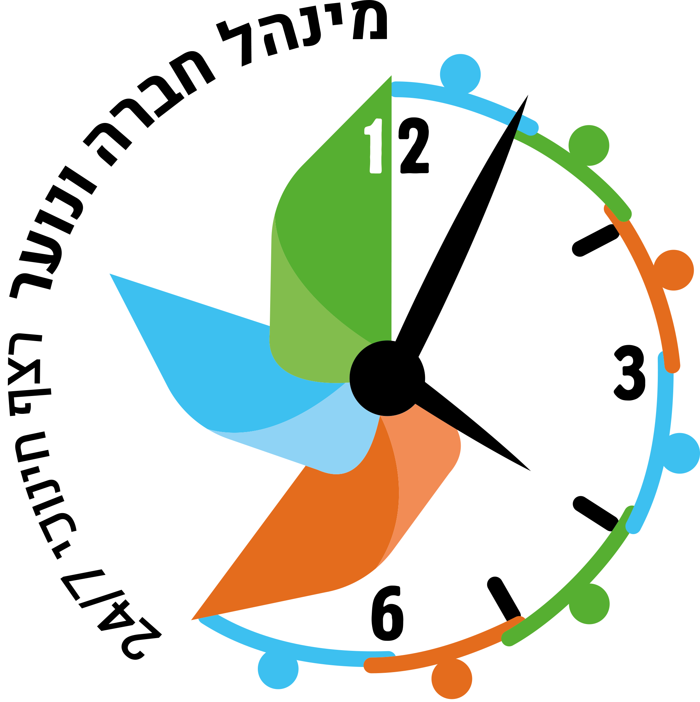

התפתחות אישית ומעורבות חברתית צ'ק ליסט לרכז/ת המעורבות - מחוז תל־אביב
שנת תשפ"ו
ברוכים/ות הבאים/ות לשנה"ל תשפ"ו רכזי ורכזות המעורבות החברתית במחוז תל אביב.
אחת ממטרות החינוך היא: "לטפח מעורבות בחיי החברה הישראלית, נכונות לקבל תפקידים ולמלאם מתוך מסירות ואחריות, רצון לעזרה הדדית, תרומה לקהילה, התנדבות וחתירה לצדק חברתי במדינת ישראל" (חוק החינוך הממלכתי התשס"ד, 2003). בעת הזו הינה צורך השעה והחברה.
מטרת התוכנית: טיפוח בוגר עצמאי, בעל תודעה, רגישות חברתית וחוסן נפשי, אכפתי ואחראי הרואה במעורבות חברתית ערך ודרך חיים.
לרשותכם/ן רשימת משימות וחומרי עזר בדגש על יישום התוכנית בתוך בית הספר וכשפה אחידה במחוז.
תיק רכז - חומרים כדוגמת טפסים (החתמת הורים, ועדות פטור), טבלת שעות, היגדים לתעודה ועוד.
תיק ממ"צ להובלת מנהיגות הנוער בתחום המעורבות החברתית (כולל רציונאל, מערכי שיעור, טפסים ועוד)
מצגת חנ"מ - מעורבות חברתית בחינוך המיוחד.
על מנת להוביל את התוכנית בצורה מיטבית יש להיכנס אחת לחודש לישיבות מחנכים בשכבות השונות, לעדכן במידע על סטטוס הפעילות של התלמידים וכן, להנחות (מודלניג) למערכי שיעורי חינוך העוסקים במעורבות ויזמות חברתית.
מאגרים ופעילויות תמצאו בתוכנית ליבה חברתית לשעת חינוך
-
חוזרי מנכ"ל ונהלים
-
לקראת פתיחת שנה וימי היערכות✔פגישה עם מנהל/ת - תיאום ציפיות ✔ישיבה עם צוות החינוך החברתי ומול לוח תכנון אירועים לשנת הלימודים הבאה ✔הזמנת הרצאות, הצגות, סדנאות ועוד (ישנם שני סלים בגפ"ן) 1. מענים חברתיים קהילתיים 2. מנהיגות ומעורבות בלמידה - תת סל של מענים פדגוגיים ✔פגישה עם מנהל.ת ההתנדבות ברשות ומפקחת רשותית ✔בקשה להקצאת זמן ביום ההיערכות עבור חשיפת התכנית לצוות ✔פגישות עם מורים מקצועיים - לשילוב בתחומי הדעת ✔פגישה עם הרכז/ת הפדגוגי/ת *לשים לב שבמערכת השעות מוקצות שעות כניסה לישיבות צוותי חינוך בשכבות י'- י"ב ולפורום רשותי על פי המועדים שיפורסמו. *הכנת מפגשי החשיפה של צוות בית הספר (בימי ההערכות/ישיבות מחנכים) למהות ומבנה התוכנית - מטרות ורציונאל.
✔קביעת מועד והכנת תהליך החשיפה לתוכנית עבור התלמידים (בשיתוף ממצ"ים/תלמידים מובילים משכבה י"א) יש לכלול שיעורי חינוך (היכרות דרך החוזקות, יריד בחירת מקום התנסות, טריביו, הטרדות מיניות, בטיחות ובטחון אישי במקום ההתנסות) סרטון מצטייני תשפ"ה מקוצר לחשיפת התוכנית לתלמידים ✔סטטוס המצב הקיים בכל שכבה: כמה תלמידים סיימו, כמה תלמידים צריכים להשלים את הדרישות משנה קודמת - חשוב ביותר! ✔לכל תלמיד שעולה לכיתה י' מומלץ לשלוח שאלון מיפוי יכולות/חוזקות ותחומי עניין :(דוגמות לשאלונים ניתן למצוא בחודש ספטמבר) ✔לבדוק עם רכזת המעורבות בשכבה ט' לגבי תלמידים מובילים בתחום ולגייסם כשותפים (ממ"צים) ✔כניסה לישיבות מחנכים וביצוע מודלינג לשיעורי חינוך לפתיחת התוכנית: תוכנית ליבה חברתית לשעת חינוך (מאגר פעילויות בראשית העמוד). ✔הסדרת ובדיקת מקומות ההתנסות שפתוחים לתלמידים במערכת הטריביו ומאושרים לשנת הלימודים תשפ"ו בכפוף לחוזר מנכ"ל נוהל הסדרה. ✔בניית תהליך החשיפה לתוכנית ותיאום מקומות ההתנסות ליריד בחירת מקום התנסות - בשיתוף מנהל התנדבות רשותי גופים קולטים מאושרים ארצי - יש לוודא מול מנהל התנדבות רשותי טריביו - מצגת הדרכה לרכז/ת סרטון הדרכה לרכז - מערכת טריביו -
ספטמבר✔טרם יציאה להתנסות יש לקבוע שיעורי חינוך בכיתות לאיתור חוזקות, הכשרת לבבות לתוכנית, איך לבחור את מקום ההתנסות שלי, הטרדות מיניות ועוד - קישור למאגר בתחילת העמוד. ✔ניתן להעזר בשאלון מיפוי חוזקות ומערכים נוספים. דוגמא 1 לשאלון מיפוי חוזקות וכישורים https://forms.gle/egFfBhxQJvJSAS3x8 דוגמא 2 לשאלון מיפוי חוזקות וכישורים https://docs.google.com/forms/d/11SYoQrQqcVcJR1mjtdeYGuqd2epsEyf2kgpzCuTc0gQ/edit ✔היכרות והצגת רכז/ת המעורבות בכל כיתה. הסבר טריביו סגירת תשפ"ו ✔לוודא אישור שעות של תלמידים משנת תשפ"ו לא יאוחר מ10/9/26 ✔הורדת אפליקציית הטריביו על ידי התלמידים (שיבוץ למקום התנסות החל מ04/10/26))
בין התאריכים 11/9-3/10/2026 מערכת הטריביו סגורה לצורך מעבר שנה, ב04/10/2026 המערכת תפתח לשנת תשפ"ז ✔החל מ04/10/26 הגדרת בעלי הרשאה בטריביו (ממ"צ, מנהלי מקומות התנסות - לא לכל אחד ולא באופן אוטומטי). סרטון הדרכה לתלמידים
✔אסיפת ההורים - הסבר על התוכנית ✔חתימת ההורים על דף ידוע על התוכנית כתנאי סף לקבלת תעודת בגרות (דוגמה בתיק רכז) ✔שיעורי חינוך בנושא: נתינה, מעורבות וערבות הדדית ✔מיפוי מצב מספר תלמידים שסיימו , תלמידים שלא השלימו חובותיהם ✔הכנת תיקי תלמיד -
אוקטובר✔ סוף אוקטובר/נובמבר יריד בחירת מקומות ההתנסות - מומלץ להיעזר בממ"צים של שכבה י"א. ✔ הורדת אפליקציית טריביו על ידי התלמידים (שכבה י') ✔ הצטרפות ובחירת מקום התנסות על ידי התלמידים (כל השכבות!!!) ✔ בחירת ממ"צים מכל כיתה (בשיתוף המחנכים - מידע בתיק ממ"צ בראש העמוד) ✔ מפגש ממ"צים ראשון - ומכאן מתחילה סדירות של מפגשים וליווי עד סוף שנה
-
נובמבר✔ תוכנית עבודה מבוססת נתונים - מיפוי נתוני סטטוס בכל השכבות. ✔ מעקב אחר הצטרפות תלמידים למקומות ההתנסות. ✔ אחת לחודש להוציא דוחות עדכניים של הטריביו ולעקוב אחר שעות מדווחות של התלמידים שכולן שעות מאושרות ✔ שילוב מעורבות בתחומי הדעת - רכז פדגוגי ✔ הנחייה וביצוע מערכי שיעור בנושאים הרלוונטיים - התחלת תהליכי איתור צרכים ועידוד ליזמות חברתית. ✔ ועדה בית ספרית - איתור ומילוי המלצה על תלמיד י"ב מצטיין מחוזי על שם אלעד ריבן ז"ל (מילוי הטופס שישלח על ידי מפקחת רשותית)
-
דצמבר✔ מילוי סטטוס מטה: לוודא שהמנהל/ת רואים את הנתונים טרם שליחתם ✔ לוודא שכל התלמידים מחוברים לאפליקציית הטריביו ✔ מערכי שיעור בנושא זיהוי כוחות - כיצד יכולות באות לידי ביטוי בפעילות במקום ההתנסות, יוזמות חברתיות - תהליך חקר, מיפוי צרכים, העלאת פתרונות ✔ מעקב אחר תלמידים - דרך הטריביו - לוודא שכל השעות המדווחות על ידי התלמידים מאושרות ע"י מנהל מקום ההתנסות. ✔ פרסום העשייה החברתית בבית הספר. ✔ איתור יוזמה מצטיינת לתחרות המחוזית - בתיאום מפקחת רשותית ומנהל התנדבות רשותי.
-
ינואר✔ לקראת סיום מחצית א' - יום הורים - מתן מידע לגבי פעילות בנם /בתם במקומות ההתנסות וביזמות החברתית ושיח רפלקטיבי ✔ בדיקת שעות מדווחות - לבדוק שכל השעות של התלמיד מאושרות במידה ויש בעיה חובה לפנות למנהל/ת ההתנדבות ברשות/מקום ההתנסות. ✔ החתמה על מכתב הורים (דוגמה בתיק רכז) ע"י המחנך *במידה והתלמיד משנה את מקום ההתנסות יש לוודא החתמה בשנית - יישמר בתיק התלמיד. ✔ לוודא בתעודות ישנו מקצוע מעורבות חברתית והיגדים - חובה *דוגמות להיגדים בתיק הרכז
-
פברואר✔ בדיקת והכנת תיקי תלמיד ✔ פרסום העשייה החברתית בבית הספר ✔ ליוי מעקב והעמקת תהליכי היזמות ✔ רענון מיום החשיפה לתוכנית וכניסה למסלול הצטיינות חברתית - תלמידי י"א ✔ שילוב והעצמת תלמידים מארגוני החירום בשבוע החירום הארצי 22-26/2 - בשילוב רכז בטחון
-
מרץ✔ הערכות ליום מעשים טובים כיום שיא בתהליכי היזמות (10/3/26) ✔ בדיקת אישור שעות ההתנסות לתלמידים בטריביו ✔ פרסום העשייה החברתית בבית הספר ✔ טקס הוקרה מחוזי לבני ובנות נוער המצטיינים בהתנדבות, יזמות ותרומה לקהילה לשנת תשפ"ו - בוגרי י"ב - 15/3/26 ✔ הנחיית הצוותים והובלת תהליכי רפלקציה
-
אפריל✔ לקראת סיום מחצית ב' מתן סטטוסים לכל מחנך ורכז שכבה לגבי הכיתה שלו - ישיבות מועצה פדגוגית ✔איסוף הערכת איש קשר/תלמיד לקראת מתן ציון. יתויק בתיק התלמיד (ראה הערכות לסוף שנה - חודש מאי-יוני) ✔ בדיקת אישור שעות ההתנסות לתלמידים בטריביו, איסוף נתונים והערכות לקראת סטטוס סוף שנה ✔ פרסום העשייה החברתית בבית הספר ✔ בדיקת תיקי התלמיד לכל שנה י'- י"ב: חתימת הורים על מקום ההתנסות, הערכות התלמיד (ממקום ההתנסות, מחנך, התלמיד) רפלקציה, סיכומי ועדת פטור – לוודא שמירת כל המסמכים בתיק התלמיד!
-
מאי-יוני
הערכת התלמיד/ה והיערכות לסוף שנההכנה לתוכנית לקראת כיתה י' (מתוך המאגרים והפעילויות בתחילת הדף). בירור ערכי, איתור חוזקות וסיוע בבחירת מקום התנסות לקראת שנה הבאה דוגמא 1 לשאלון מיפוי חוזקות וכישורים https://forms.gle/egFfBhxQJvJSAS3x8 דוגמא 2 לשאלון מיפוי חוזקות וכישורים https://docs.google.com/forms/d/11SYoQrQqcVcJR1mjtdeYGuqd2epsEyf2kgpzCuTc0gQ/edit ✔ הסבר על תפקיד הממ"צ – מוביל מעורבות צעיר. תיק ממ"צ להובלת מנהיגות הנוער בתחום המעורבות החברתית (כולל רציונאל, מערכי שיעור, טפסים ועוד) ✔ מפגש עם תלמידים מצטיינים משכבה בוגרת וממ"צים מהתיכון. ✔ סיכום תהליכי יזמות, פרסום העשייה הבית ספרית, הגשת יוזמות תלמידים להצטיינות * המלצה: הורדת אפליקציית הטריביו ובדיקת סיסמה ושם משתמש (סרטון הדרכה - בתחילת הצ'ק ליסט) ✔ אירוע מסכם בבית הספר וחשיפה לתלמידי ח' לקראת שנה הבאה. ✔ חפיפה עם רכז/ת מעורבות בשכבה י' לשימור וחיזוק קבוצת התלמידים המובילים בתחום (יזמים/ממ"צים ועוד) ✔ לקראת סיום מחצית ב' מתן סטטוסים לכל מחנך ורכז שכבה לגבי הכיתה שלו – ישיבות מועצה פדגוגית. ✔לוודא כי המקצוע "התפתחות אישית ומעורבות חברתית" מופיע בתעודה - היגדים מומלצים *בתיק רכז בתחילת הצ'ק ליסט ✔ הוקרה וטקסי מצטיינים, הפקת לקחים, סיכום עם הצוות החינוכי
✔ איסוף נתונים להערכת התלמיד (רפלקציה ו־3 שאלוני הערכה: ממקום ההתנסות/מחנך/תלמיד.ה) *בתיק רכז ✔ בדיקה ואישור שעות בטריביו *שעות שלא יאושרו יימחקו אוטומטית בסוף השנה. ✔ סיכום תהליכי יזמות, פרסום העשייה הבית ספרית, הגשת יוזמות תלמידים להצטיינות . ✔ שכבה י' – תכנון ובניית ימי חשיפה לקראת שנה הבאה, יחד עם הממ"צים / מנהיגויות נוער. ✔ מכתבים אישיים לתלמידים שלא סיימו חובותיהם (ציון 1) *דוגמה בתיק רכז ✔ לקראת סיום מחצית ב' מתן סטטוסים לכל מחנך ורכז שכבה לגבי הכיתה שלו – ישיבות מועצה פדגוגית. ✔ לוודא כי המקצוע "התפתחות אישית ומעורבות חברתית" מופיע בתעודה - היגדים מומלצים בתיק הרכז* ✔ בדיקת תיקי התלמיד שכוללים לכל שנה: מכתב יידוע הורים, חתימת הורים על מקום ההתנסות, הערכות התלמיד (מאיש הקשר, מחנך, התלמיד) עבודת רפלקציה, סיכום ועדת פטור – לוודא שמירת כל המסמכים בתיק התלמיד 7 שנים מיום סיום לימודיו! ✔ סיכום ותהליכי פרידה ממקומות ההתנסות. ✔ הפקת לקחים וחשיבה על הטמעת התוכנית בתחומי דעת נוספים. ✔ הערכת מקומות ההתנסות - לבחון ולהחליט האם מקומות ההתנסות מתאימים ורלוונטיים לשנה הבאה (האם הפעילות ערכית ומשמעותית? איש קשר מלווה? מידת שיתוף הפעולה בכתיבת הערכת התלמיד וכו'). ✔ עידוד להצטיינות לצד איתור מצטיינים משכבה י"א ועידוד ליזמות. ✔ הערכות לקראת שנה הבאה באיתור המועמדים להצטיינות ע"ש אלעד ריבן ז"ל וראש העיר (באוקטובר/נובמבר 2026 תתבקשו להעביר המלצות עבור תלמידי י"ב). ✔ הוקרה במסגרת בית הספר לצוותים שהובילו ובלטו בהובלת יוזמות, שילוב בתחומי הדעת ועוד במסגרת התוכנית.
✔ ביצוע תהליכי רפלקציה - עבודת סיכום רפלקטיבית המתארת את ההתנסות לאורך 3 השנים (בהיקף של לפחות 2 עמודים. במסלול הצטיינות לפחות 5 עמודים). ✔ איסוף נתונים להערכת התלמיד (רפלקציה ו־3 שאלוני הערכה: ממקום ההתנסות/מחנך/התלמיד.ה) לכל שנה *בתיק רכז ✔ בדיקה ואישור שעות בטריביו *שעות שלא יאושרו יימחקו אוטומטית בסוף השנה *טבלת שעות לי"ב (בתיק רכז ובמצגת הערכת התלמיד) ✔ סיכום תהליכי יזמות, פרסום העשייה הבית ספרית, הגשת יוזמות תלמידים להצטיינות ✔ קיום ועדות פטור לזכאים (ללא תלות בזכאות לבגרות) – לוודא שמירת פרוטוקול בתיק התלמיד/ה מיום סיום לימודיו. ✔ מכתבים אישיים לתלמידים שלא סיימו חובותיהם (ציון 1) *בתיק רכז ✔ לקראת סיום מחצית ב' מתן סטטוסים לכל מחנך ורכז שכבה לגבי הכיתה שלו – ישיבות מועצה פדגוגית. ✔ לוודא כי המקצוע "התפתחות אישית ומעורבות חברתית" מופיע בתעודה - היגדים מומלצים *בתיק הרכז ✔ הפקת דו"ח שעות טריביו (ושמירתו) - חשוב! ✔ בדיקת תיקי התלמיד שכוללים לכל שנה: חתימת הורים על מקום ההתנסות, הערכות התלמיד (ממקום ההתנסות, מחנך, התלמיד) רפלקציה, סיכומי ועדת פטור – לוודא שמירת כל המסמכים בתיק התלמיד מיום סיום לימודיו! ✔ סיכום ותהליכי פרידה ממקומות ההתנסות ✔ הפקת לקחים וחשיבה על הטמעת התוכנית בתחומי דעת נוספים. ✔ לבחון ולהחליט האם מקומות ההתנסות מתאימים ורלוונטיים לשנה הבאה (האם הפעילות ערכית ומשמעותית? איש קשר מלווה? מידת שיתוף הפעולה בכתיבת משובים וכו') ✔ הקלדת הערכות וציונים במערכת הבגרויות *סמל השאלון 86083, יש לברר מול רכז הבגרויות מועדי הזנה והנחיות ✔ באחריות ביה"ס הנפקת והדפסת תעודות למצטייני התוכנית (ציון 4)
 מצגת הנפקת תעודות*
✔ אירוע סיכום במעורבות חברתית – חגיגת זכאות, טקסי מצטיינים.
✔ הוקרה במסגרת בית הספר לצוותים שהובילו ובלטו בהובלת יוזמות, שילוב בתחומי הדעת ועוד במסגרת התוכנית.
מצגת הנפקת תעודות*
✔ אירוע סיכום במעורבות חברתית – חגיגת זכאות, טקסי מצטיינים.
✔ הוקרה במסגרת בית הספר לצוותים שהובילו ובלטו בהובלת יוזמות, שילוב בתחומי הדעת ועוד במסגרת התוכנית.
-
רפלקציה
מחוון לבדיקת רפלקציה
✔ שקופיות 21 במצגת הערכת התלמיד - רפלקציה הערכת התלמיד (רפלקציה ו־3 שאלוני הערכה: ממקום ההתנסות/מחנך/התלמיד.ה) לכל שנה *בתיק רכז
-
שילוב בתחומי הדעת
מרחב לאיסוף רעיונות, מערכי שיעור וחומרים לשילוב תוכנית המעורבות החברתית בתחומי הדעת השונים. לחצו על כל תחום דעת כדי לפתוח אותו ולהוסיף קישורים, מסמכים או תיאור קצר של הפעילות.
* להוספת תחום דעת נוסף: יש להעתיק את מבנה ה־accordion-item (בתוך קוד העמוד) ולהדביק תחת אחד הקיימים, לשנות את השם ואת הצבע (--subject-color) ולהחליף את הטקסט המצוין כ"טרם נוספו חומרים".טרם נוספו חומרים...
טרם נוספו חומרים...
טרם נוספו חומרים...
טרם נוספו חומרים...
טרם נוספו חומרים...
טרם נוספו חומרים...
טרם נוספו חומרים...
טרם נוספו חומרים...
טרם נוספו חומרים...
טרם נוספו חומרים...